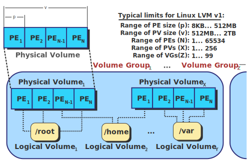

LVM – Logical volume management
In computer storage, logical volume management or LVM provides a method of allocating space on mass-storage devices that is more flexible than conventional partitioning schemes. In particular, a volume manager can concatenate, stripe together or otherwise combine partitions (or block devices in general) into larger virtual ones that administrators can re-size or move, potentially without interrupting system use.
- Conf-file –
/etc/lvm/lvm.conf

Management
- Create a Logic Volume:
pvcreate –> vgcreate –> lvcreate –> mkfs.ext3 –> mount
| pvcreate /dev/sda5 dev/sda6
vgcreate vg0 /dev/sda5 /dev/sda6
lvcreate -L 800M -n lv0 vg0
mkfs.ext3 /dev/vg0/lv0
mount /dev/vg0/lv0 /mnt``
|
- Delete a Logic Volume:
lvremove –> vgremove –> pvremove
| lvremove lv0
vgremove vg0
pvremove /dev/sda5 dev/sda6
|
- Expand Logic Volume:
lvextend –> resize2fs
| # lvextend -L 1000M /dev/vg0/lv0 # extend to 1G
lvextend -L +400M /dev/vg0/lv0 # extend 400M
resize2fs /mnt
|
- Reduce Logic Volume:
umount –> e2fsck –> resize2fs –> lvreduce
| umount /mnt
e2fsck -f /dev/vg0/lv0
resize2fs /dev/vg0/lv0 180M #file system resize to a smaller size
lvreduce -L 1000M /dev/vg0/lv0 #reduce to 1000M
|
| pvcreate /dev/sda8
vgextend vg0 /dev/sda8
|
| # pvmove /dev/sda6:1-20 /dev/sda7 # will on move pe block 1-20 to sda7
pvmove /dev/sda6 #move PE to out of sda6(PV)
vgreduce vg0 /dev/sda6 #reduce one or more unused PV
pvremove /dev/sda6
|
Check lvm infos
1
2
3
4
5
6
7
8
9
10
11
12
13
14
15
16
17
18
19
20
21
22
23
24
25
26
27
28
29
30
31
32
33
34
35
36
37
38
39
40
41
42
43
44
45
46
47
48
49
50
51
52
53
54
55
56
57
58
59
60
61
62
63
64
65
66
67
68
69
70
71
72
73
74
75
76
77
78
79
80
81
82
83
84
85
86
87
88
89
90
91
92
93
94
95
96
97 | # pvs
PV VG Fmt Attr PSize PFree
/dev/loop1 stack-volumes-default lvm2 a-- 10.01g 10.01g
/dev/loop2 stack-volumes-lvmdriver-1 lvm2 a-- 10.01g 8.00m
# vgs
VG #PV #LV #SN Attr VSize VFree
stack-volumes-default 1 0 0 wz--n- 10.01g 10.01g
stack-volumes-lvmdriver-1 1 1 0 wz--n- 10.01g 8.00m
# lvs
LV VG Attr LSize Pool Origin Data% Meta% Move Log Cpy%Sync Convert
volume-c86ee1fc-0881-4b85-aa8a-432f8ad1c9cb stack-volumes-lvmdriver-1 -wi-ao---- 10.00g
# pvdisplay
--- Physical volume ---
PV Name /dev/loop1
VG Name stack-volumes-default
PV Size 10.01 GiB / not usable 2.00 MiB
Allocatable yes
PE Size 4.00 MiB
Total PE 2562
Free PE 2562
Allocated PE 0
PV UUID dohGEH-212L-10Nb-wiWQ-mjZ4-ApKS-AchT26
--- Physical volume ---
PV Name /dev/loop2
VG Name stack-volumes-lvmdriver-1
PV Size 10.01 GiB / not usable 2.00 MiB
Allocatable yes
PE Size 4.00 MiB
Total PE 2562
Free PE 2
Allocated PE 2560
PV UUID UdQnN2-ddmJ-w3az-Gzp3-b7pf-tIFS-IB8Pho
# vgdisplay
--- Volume group ---
VG Name stack-volumes-default
System ID
Format lvm2
Metadata Areas 1
Metadata Sequence No 1
VG Access read/write
VG Status resizable
MAX LV 0
Cur LV 0
Open LV 0
Max PV 0
Cur PV 1
Act PV 1
VG Size 10.01 GiB
PE Size 4.00 MiB
Total PE 2562
Alloc PE / Size 0 / 0
Free PE / Size 2562 / 10.01 GiB
VG UUID VWeopN-dnmk-W6Gg-byZE-JwRw-hndS-9xa5LU
--- Volume group ---
VG Name stack-volumes-lvmdriver-1
System ID
Format lvm2
Metadata Areas 1
Metadata Sequence No 2
VG Access read/write
VG Status resizable
MAX LV 0
Cur LV 1
Open LV 1
Max PV 0
Cur PV 1
Act PV 1
VG Size 10.01 GiB
PE Size 4.00 MiB
Total PE 2562
Alloc PE / Size 2560 / 10.00 GiB
Free PE / Size 2 / 8.00 MiB
VG UUID 5TTHgC-LXzV-7i9u-YXnG-KQTY-HXmD-SFocsq
# lvdisplay
--- Logical volume ---
LV Path /dev/stack-volumes-lvmdriver-1/volume-c86ee1fc-0881-4b85-aa8a-432f8ad1c9cb
LV Name volume-c86ee1fc-0881-4b85-aa8a-432f8ad1c9cb
VG Name stack-volumes-lvmdriver-1
LV UUID KSvISz-D19i-13Ra-ZCVj-tkSa-dco6-uX7PJ2
LV Write Access read/write
LV Creation host, time r16s12, 2015-05-28 16:35:27 +0800
LV Status available
open 1
LV Size 10.00 GiB
Current LE 2560
Segments 1
Allocation inherit
Read ahead sectors auto
- currently set to 256
Block device 253:0
|
Issues
- remove vg after pv been removed
$sudo vgremove r16s03-default
Incorrect metadata area header checksum on /dev/loop1 at offset 4096
vg_remove_mdas r16s03-default failed
$ sudo vgremove r16s03-default --force
/dev/loop1: lseek 4096 failed: Invalid argument
vg_remove_mdas r16s03-default failed
sudo pvremove /dev/loop1 -ff
- lvremove: Logical volume in use
$ sudo lvremove /dev/r16s11-lvmdriver-1/volume-daffbf30-30b9-4da3-9d34-de1c658ee38c
Logical volume r16s11-lvmdriver-1/volume-daffbf30-30b9-4da3-9d34-de1c658ee38c in use.
$ sudo fuser /dev/r16s11-lvmdriver-1/volume-daffbf30-30b9-4da3-9d34-de1c658ee38c
/dev/dm-0: 159892
$ sudo kill -9 159892
$ sudo umount /dev/r16s11-lvmdriver-1/volume-daffbf30-30b9-4da3-9d34-de1c658ee38c
- Disk is apparently in use by the system
# mkfs.ext3 /dev/sdb1
mke2fs 1.39 (29-May-2006)
/dev/sdb1 is apparently in use by the system; will not make a filesystem here!
- Solution: remove the disk
# dmsetup — low level logical volume management
dmsetup remove /dev/sdb1
Loop Device
In Unix-like operating systems, a loop device, vnd (vnode disk), or lofi (loop file interface) is a pseudo-device that makes a file accessible as a block device.
Sparse File
Sparse file is a type of computer file that attempts to use file system space more efficiently when blocks allocated to the file are mostly empty.
$ truncate -s 512M file1.img
$ dd if=/dev/zero of=file2.img bs=1 count=0 seek=512M
0+0 records in
0+0 records out
0 bytes (0 B) copied, 0.000173649 s, 0.0 kB/s
$ du -h file* # real size
0 file1.img
0 file2.img
$ du -h --apparent-size file*
512M file1.img
512M file2.img
$ ll -h file*
-rw-r--r-- 1 root root 512M Jul 23 15:15 file1.img
-rw-r--r-- 1 root root 512M Jul 23 15:15 file2.img
copying w/ ‘cp’
Normally, `cp’ is good at detecting whether a file is sparse, so it suffices to run:
cp file.img new_file.img # will create sparse file if src file is in sparse state
cp --sparse=always new_file.img recovered_file.img # useful if a sparse-file has somehow become non-sparse
Archiving w/ `tar’
# tar -Scf file.tar file.img # w/o '-S', it will be 512M
# du -h file.tar
12K file.tar
Mount sparse file
It can be either mounted as a loop device, or pretend to be an loop device.
# mkfs.reiserfs -f -q file.img
mkfs.reiserfs 3.6.21 (2009 www.namesys.com)
# du -h file.img
33M file.img
# du -h --apparent-size file.img
512M file.img
# mkdir folder
# mount -o loop file.img folder
Create Loop Device
- Setup loop device:
losetup [-o offset] [--sizelimit size] [-p pfd] [-rP] {-f[--show]|loopdev} file
-show will print device name
# Get infos
# ---------
losetup loopdev # show specified loopdev
losetup -l [-a] # show loopdev list
losetup -j file [-o offset]
losetup -f # Print first unused loop device
# management
# ----------
losetup -d loopdev... # Delete loop
losetup -D # Delete all used loop devices
losetup -c loopdev # Resize loop device